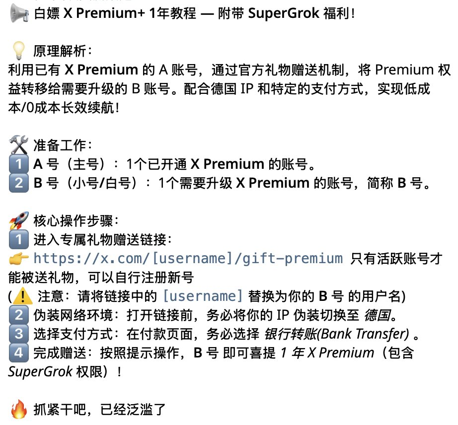
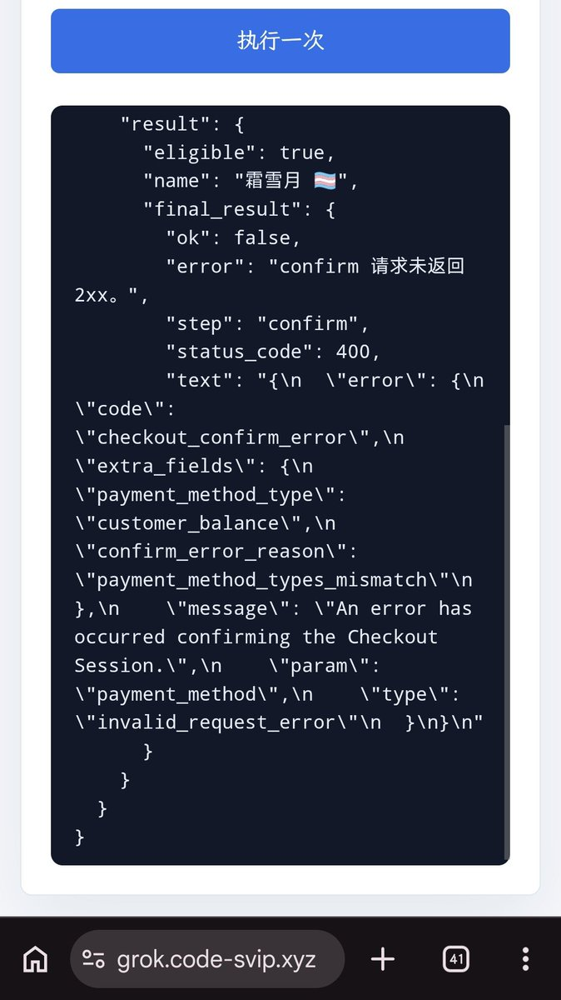
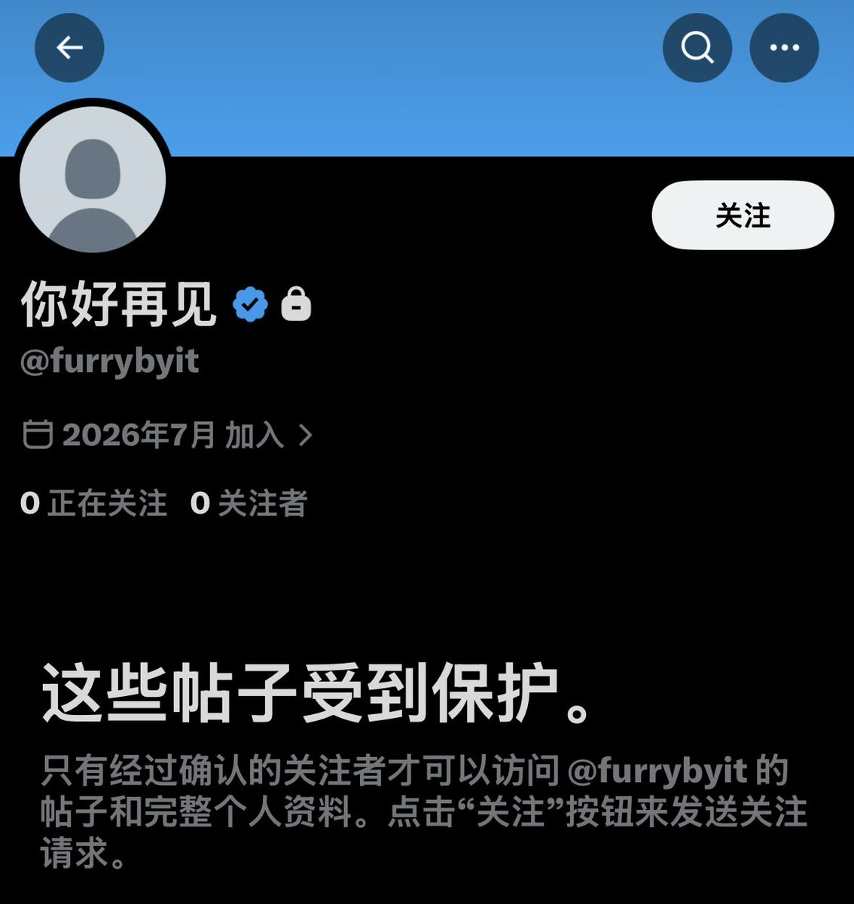

@CyberKanjousen 漏洞解析，在修复前已经泛滥低成本了，很可能就是认识的人送到。





关于推特很多人收到一年p+这件事，这里有很确定的原因了。
此外，LINUX DO论坛用户声称在3点半的时候漏洞已被拉闸。
所以有些人收到赠送很可能就是谁经常刷到你而故意送的，至于是不是想炸号。。。可能他主观认为不是吧。。。
此外，这里有人已经做出了自助网站，但目前已经无法成功了。 https://t.co/yJQBRmWy2D
此外，LINUX DO论坛用户声称在3点半的时候漏洞已被拉闸。
所以有些人收到赠送很可能就是谁经常刷到你而故意送的，至于是不是想炸号。。。可能他主观认为不是吧。。。
此外，这里有人已经做出了自助网站，但目前已经无法成功了。 https://t.co/yJQBRmWy2D
環状線认为这些 Premium+ 订阅礼物有问题。
这是環状線在时间线上刷到的第 3 个被送 Premium+ 的推文了。
为什么要赠送 Premium+？为什么赠送的都是同样的一年期限的 Premium+？为什么这个赠送者是锁推状态且 0 正在关注 0 关注者？要知道作为礼物赠送的一年 Premium+ 至少需要 2k 多 CNY https://t.co/2smxGk2x9z https://t.co/gZP1jTiXRO
这是環状線在时间线上刷到的第 3 个被送 Premium+ 的推文了。
为什么要赠送 Premium+？为什么赠送的都是同样的一年期限的 Premium+？为什么这个赠送者是锁推状态且 0 正在关注 0 关注者？要知道作为礼物赠送的一年 Premium+ 至少需要 2k 多 CNY https://t.co/2smxGk2x9z https://t.co/gZP1jTiXRO